Note, there is a much improved version of this library called "Modelica_StateGraph2". If this library is not yet distributed with your Modelica tool, you can download it from http://www.modelica.org/libraries/Modelica_StateGraph2. In the Users Guide a detailed comparison is given. It is highly recommended to use Modelica_StateGraph2 instead of Modelica.StateGraph.
Library StateGraph is a free Modelica package providing components to model discrete event and reactive systems in a convenient way. It is based on the JGraphChart method and takes advantage of Modelica features for the "action" language. JGraphChart is a further development of Grafcet to include elements of StateCharts that are not present in Grafcet/Sequential Function Charts. Therefore, the StateGraph library has a similar modeling power as StateCharts but avoids some deficiences of StateCharts.
For an introduction, have especially a look at:
A typical model generated with this library is shown in the next figure where on the left hand side a two-tank system with a tank controller and on the right hand side the top-level part of the tank controller as a StateGraph is shown:


The unique feature of the StateGraph library with respect to JGraphCharts, Grafcet, Sequential Function Charts, and StateCharts, is Modelica's "single assignment rule" that requires that every variable is defined by exactly one equation. This leads to a different "action" definition as in these formalisms. The advantage is that the translator can either determine a useful evaluation sequence by equation sorting or reports an error if this is not possible, e.g., because a model would lead to a non-determinism or to a dead-lock. As a side effect, this leads also to simpler and more easier to understand models and global variables are no longer needed (whereas in JGraphCharts, Grafcet, Sequential Function Charts and StateCharts global variables are nearly always needed).
Copyright © 1998-2010, Modelica Association and DLR
This Modelica package is free software and the use is completely at your own risk; it can be redistributed and/or modified under the terms of the Modelica License 2. For license conditions (including the disclaimer of warranty) see Modelica.UsersGuide.ModelicaLicense2 or visit http://www.modelica.org/licenses/ModelicaLicense2.
Extends from Modelica.Icons.Package (Icon for standard packages).
| Name | Description |
|---|---|
| User's Guide of StateGraph Library | |
| Examples to demonstrate the usage of the components of the StateGraph library | |
| Connectors and partial models | |
| Initial step (= step that is active when simulation starts) | |
| 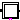 InitialStepWithSignal | Initial step (= step that is active when simulation starts). Connector 'active' is true when the step is active |
| Ordinary step (= step that is not active when simulation starts) | |
| Ordinary step (= step that is not active when simulation starts). Connector 'active' is true when the step is active | |
| 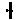 Transition | Transition where the fire condition is set by a modification of variable condition |
| 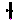 TransitionWithSignal | Transition where the fire condition is set by a Boolean input signal |
| 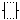 Alternative | Alternative splitting of execution path (use component between two steps) |
| Parallel splitting of execution path (use component between two transitions) | |
| 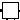 PartialCompositeStep | Superclass of a subgraph, i.e., a composite step that has internally a StateGraph |
| 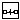 StateGraphRoot | Root of a StateGraph (has to be present on the highest level of a StateGraph) |
| Components that will be provided by other libraries in the future |
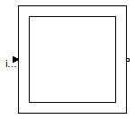
Extends from Interfaces.PartialStep (Partial step with one input and one output transition port).
| Type | Name | Default | Description |
|---|---|---|---|
| Integer | nIn | 1 | Number of input connections |
| Integer | nOut | 1 | Number of output connections |
| Type | Name | Description |
|---|---|---|
| Step_in | inPort[nIn] | Vector of step input connectors |
| Step_out | outPort[nOut] | Vector of step output connectors |
block InitialStep
"Initial step (= step that is active when simulation starts)"
output Boolean active
"= true if step is active, otherwise the step is not active";
extends Interfaces.PartialStep;
initial equation
active = true;
equation
active = localActive;
end InitialStep;
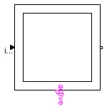
Extends from Interfaces.PartialStep (Partial step with one input and one output transition port).
| Type | Name | Default | Description |
|---|---|---|---|
| Integer | nIn | 1 | Number of input connections |
| Integer | nOut | 1 | Number of output connections |
| Type | Name | Description |
|---|---|---|
| Step_in | inPort[nIn] | Vector of step input connectors |
| Step_out | outPort[nOut] | Vector of step output connectors |
| output BooleanOutput | active |
block InitialStepWithSignal "Initial step (= step that is active when simulation starts). Connector 'active' is true when the step is active" extends Interfaces.PartialStep;Modelica.Blocks.Interfaces.BooleanOutput active; initial equation active = true; equation active = localActive;end InitialStepWithSignal;
 Modelica.StateGraph.Step
Modelica.StateGraph.Step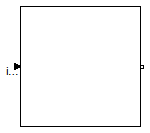
Extends from Interfaces.PartialStep (Partial step with one input and one output transition port).
| Type | Name | Default | Description |
|---|---|---|---|
| Integer | nIn | 1 | Number of input connections |
| Integer | nOut | 1 | Number of output connections |
| Type | Name | Description |
|---|---|---|
| Step_in | inPort[nIn] | Vector of step input connectors |
| Step_out | outPort[nOut] | Vector of step output connectors |
block Step
"Ordinary step (= step that is not active when simulation starts)"
output Boolean active
"= true if step is active, otherwise the step is not active";
extends Interfaces.PartialStep;
initial equation
active = false;
equation
active = localActive;
end Step;
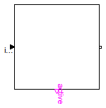
Extends from Interfaces.PartialStep (Partial step with one input and one output transition port).
| Type | Name | Default | Description |
|---|---|---|---|
| Integer | nIn | 1 | Number of input connections |
| Integer | nOut | 1 | Number of output connections |
| Type | Name | Description |
|---|---|---|
| Step_in | inPort[nIn] | Vector of step input connectors |
| Step_out | outPort[nOut] | Vector of step output connectors |
| output BooleanOutput | active |
block StepWithSignal "Ordinary step (= step that is not active when simulation starts). Connector 'active' is true when the step is active" extends Interfaces.PartialStep;Modelica.Blocks.Interfaces.BooleanOutput active; initial equation active = false; equation active = localActive;end StepWithSignal;
 Modelica.StateGraph.Transition
Modelica.StateGraph.Transition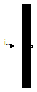
Extends from Interfaces.PartialTransition (Partial transition with input and output connections).
| Type | Name | Default | Description |
|---|---|---|---|
| Boolean | localCondition | condition | = true, if transition may fire |
| Fire condition | |||
| Boolean | condition | true | = true, if transition may fire (time varying expression) |
| Timer | |||
| Boolean | enableTimer | false | = true, if timer is enabled |
| Time | waitTime | 0 | Wait time before transition fires [s] |
| Type | Name | Description |
|---|---|---|
| Transition_in | inPort | Vector of transition input connectors |
| Transition_out | outPort | Vector of transition output connectors |
block Transition
"Transition where the fire condition is set by a modification of variable condition"
input Boolean condition=true
"= true, if transition may fire (time varying expression)";
extends Interfaces.PartialTransition(final localCondition=condition);
end Transition;
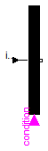
Extends from Interfaces.PartialTransition (Partial transition with input and output connections).
| Type | Name | Default | Description |
|---|---|---|---|
| Boolean | localCondition | condition | = true, if transition may fire |
| Timer | |||
| Boolean | enableTimer | false | = true, if timer is enabled |
| Time | waitTime | 0 | Wait time before transition fires [s] |
| Type | Name | Description |
|---|---|---|
| input BooleanInput | condition | |
| Transition_in | inPort | Vector of transition input connectors |
| Transition_out | outPort | Vector of transition output connectors |
block TransitionWithSignal "Transition where the fire condition is set by a Boolean input signal"Modelica.Blocks.Interfaces.BooleanInput condition; extends Interfaces.PartialTransition(final localCondition=condition);end TransitionWithSignal;

| Type | Name | Default | Description |
|---|---|---|---|
| Integer | nBranches | 2 | Number of alternative branches |
| Type | Name | Description |
|---|---|---|
| Transition_in | inPort | |
| Transition_out | outPort | |
| Step_in_forAlternative | join[nBranches] | |
| Step_out_forAlternative | split[nBranches] |
block Alternative "Alternative splitting of execution path (use component between two steps)" parameter Integer nBranches(min=1)=2 "Number of alternative branches";Interfaces.Transition_in inPort; Interfaces.Transition_out outPort; Step_in_forAlternative join[nBranches]; Step_out_forAlternative split[nBranches]; protectedconnector Step_in_forAlternative "Input port of a step (has special icon for usage in component 'Alternative')" output Boolean occupied "true, if step is active"; input Boolean set "true, if transition fires and step is activated"; end Step_in_forAlternative ;connector Step_out_forAlternative "Output port of a step (has special icon for usage in component 'Alternative')" output Boolean available "true, if step is active"; input Boolean reset "true, if transition fires and step is deactivated"; end Step_out_forAlternative ; equation // Check connections of connectors assert(cardinality(inPort) == 1, "Connector inPort is not connected to exactly one other connector"); assert(cardinality(outPort) == 1, "Connector outPort is not connected to exactly one other connector"); for i in 1:nBranches loop assert(cardinality(split[i]) == 1, "Connector is not connected to exactly one other connector"); assert(cardinality(join[i]) == 1, "Connector is not connected to exactly one other connector"); end for; // Propagate flags between the connectors for i in 1:nBranches loop split[i].available = if i==1 then inPort.available else split[i-1].available and not split[i-1].reset; end for; join.occupied = fill(outPort.occupied, nBranches); inPort.reset = StateGraph.Temporary.anyTrue(split.reset); outPort.set = StateGraph.Temporary.anyTrue(join.set);end Alternative;

| Type | Name | Default | Description |
|---|---|---|---|
| Integer | nBranches | 2 | Number of parallel branches that are executed in parallel |
| Type | Name | Description |
|---|---|---|
| Step_in | inPort | |
| Step_out | outPort | |
| Transition_in_forParallel | join[nBranches] | |
| Transition_out_forParallel | split[nBranches] |
block Parallel
"Parallel splitting of execution path (use component between two transitions)"
parameter Integer nBranches(min=1)=2
"Number of parallel branches that are executed in parallel";
Interfaces.Step_in inPort;
Interfaces.Step_out outPort;
Transition_in_forParallel join[nBranches];
Transition_out_forParallel split[nBranches];
protected
connector Transition_in_forParallel
"Input port of a transition (has special icon for usage in component 'Parallel')"
input Boolean available
"true, if step connected to the transition input is active";
output Boolean reset
"true, if transition fires and the step connected to the transition input is deactivated";
end Transition_in_forParallel ;
connector Transition_out_forParallel
"Output port of a transition (has special icon for usage in component 'Parallel')"
input Boolean occupied
"true, if step connected to the transition output is active";
output Boolean set
"true, if transition fires and step connected to the transition output becomes active";
end Transition_out_forParallel ;
equation
// Check connections of connectors
assert(cardinality(inPort) == 1,
"Connector inPort is not connected to exactly one other connector");
assert(cardinality(outPort) == 1,
"Connector outPort is not connected to exactly one other connector");
for i in 1:nBranches loop
assert(cardinality(split[i]) == 1,
"Connector is not connected to exactly one other connector");
assert(cardinality(join[i]) == 1,
"Connector is not connected to exactly one other connector");
end for;
// Propagate flags between the connectors
split.set = fill(inPort.set, nBranches);
join.reset = fill(outPort.reset, nBranches);
inPort.occupied = StateGraph.Temporary.anyTrue(split.occupied);
outPort.available = StateGraph.Temporary.allTrue(join.available);
end Parallel;
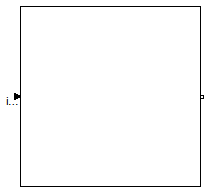
| Type | Name | Default | Description |
|---|---|---|---|
| Exception connections | |||
| Integer | nSuspend | 1 | Number of suspend ports |
| Integer | nResume | 1 | Number of resume ports |
| Type | Name | Description |
|---|---|---|
| Step_in | inPort | |
| Step_out | outPort | |
| CompositeStep_suspend | suspend[nSuspend] | |
| CompositeStep_resume | resume[nResume] |
partial model PartialCompositeStep
"Superclass of a subgraph, i.e., a composite step that has internally a StateGraph"
parameter Integer nSuspend = 1 "Number of suspend ports";
parameter Integer nResume = 1 "Number of resume ports";
/* The modification of stateGraphRoot is with respect to the "inner"
definition, i.e., it is reported to all components that are
within the CompositeStep
*/
inner outer StateGraph.Interfaces.CompositeStepState stateGraphRoot(
suspend = StateGraph.Temporary.anyTrue(suspend.reset) or outerState.subgraphStatePort.suspend,
resume = StateGraph.Temporary.anyTrue(resume.set) or outerState.subgraphStatePort.resume)
"Communication port between the CompositeStep and the steps within the CompositeStep";
output Boolean active
"= true if step is active, otherwise the step is not active";
StateGraph.Interfaces.Step_in inPort;
StateGraph.Interfaces.Step_out outPort;
StateGraph.Interfaces.CompositeStep_suspend suspend[nSuspend];
StateGraph.Interfaces.CompositeStep_resume resume[nResume];
model OuterState
"Block containing the port that is connected to the outer stateGraphRoot"
Interfaces.CompositeStepStatePort_in subgraphStatePort
"Port connected to outer stateGraphRoot";
end OuterState ;
OuterState outerState;
protected
model InnerState
outer Interfaces.CompositeStepState stateGraphRoot;
end InnerState ;
InnerState innerState;
Boolean newActive "Value of active in the next iteration";
Integer activeSteps "Number of active steps within the CompositeStep";
initial equation
pre(newActive) = pre(active);
equation
// connect to outer CompositeStep
connect(outerState.subgraphStatePort, stateGraphRoot.subgraphStatePort);
outerState.subgraphStatePort.activeSteps = if active then 1.0 else 0.0;
// set active flag of CompositeStep
activeSteps = -integer(innerState.stateGraphRoot.subgraphStatePort.activeSteps);
active = pre(newActive);
/* The CompositeStep is active if
- at least one step within the CompositeStep is active, and
- the suspend transition does not fire, and
- the suspend transition of a higher level CompositeStep does not fire or
- no step within the CompositeStep is active, and
- the resume transition fires or the resume transition of
a higher level CompositeStep fires.
*/
// newActive = activeSteps > 0 and not suspend.reset or resume.set;
newActive = activeSteps > 0 and not StateGraph.Temporary.anyTrue(suspend.reset) and not
outerState.subgraphStatePort.suspend or
StateGraph.Temporary.anyTrue(resume.set) or outerState.subgraphStatePort.resume;
// Report state to suspend and resume transitions
for i in 1:nResume loop
resume[i].occupied = if i == 1 then active else
resume[i-1].occupied or
resume[i-1].set;
end for;
for i in 1:nSuspend loop
suspend[i].available = if i == 1 then active else
suspend[i-1].available and not
suspend[i-1].reset;
end for;
/* Check that connections to the connectors are correct
and set appropriate defaults if necessary
*/
for i in 1:nSuspend loop
assert(cardinality(suspend[i]) <= 1,
"Connector suspend[" + String(i) + "] of the CompositeStep is connected
to more than one transition");
if cardinality(suspend[i]) == 0 then
suspend[i].reset = false;
end if;
end for;
for i in 1:nResume loop
assert(cardinality(resume[i]) <= 1,
"Connector resume[" + String(i) + "] of the CompositeStep is connected
to more than one transition");
if cardinality(resume[i]) == 0 then
resume[i].set = false;
end if;
end for;
/* Zero sized connectors are not yet fully supported in
Dymola. This requires to set the dimension of the connector
to 1, if it should have a dimension of zero. This requires
to set the connector variables to a default value in this case
*/
if cardinality(inPort) < 2 then
inPort.occupied = false;
inPort.set = false;
end if;
if cardinality(outPort) < 2 then
outPort.available = false;
outPort.reset = false;
end if;
// Check inPort/outPort connections
assert(cardinality(inPort) <= 2,
"Connector inPort of the CompositeStep has more than 2 connections.
It should have only one connection from the outside to the
inPort and one connection to a step inside the CompositeStep.");
assert(cardinality(outPort) <= 2,
"Connector outPort of the CompositeStep has more than 2 connections.
It should have only one connection from the outPort to the
outside to the CompositeStep and one connection from a step
inside the CompositeStep to the outPort connector.");
end PartialCompositeStep;
On the highest level of a StateGraph, an instance of StateGraphRoot has to be present. If it is not within in a model, it is automatically included by a Modelica translator due to an appropriate annotation. Practically, this means that it need not be present in a StateGraph model.
The StateGraphRoot object is needed, since all Step objects have an "outer" reference to communicate with the "nearest" CompositeStep (which inherits from PartialCompositeStep), especially to abort a CompositeStep via the "suspend" port. Even if no "CompositeStep" is present, on highest level a corresponding "inner" definition is needed and is provided by the StateGraphRoot object.
Extends from StateGraph.Interfaces.CompositeStepState (Communication channel between CompositeSteps and steps in the CompositeStep).
| Type | Name | Description |
|---|---|---|
| CompositeStepStatePort_out | subgraphStatePort |
model StateGraphRoot "Root of a StateGraph (has to be present on the highest level of a StateGraph)" extends StateGraph.Interfaces.CompositeStepState; output Integer activeSteps "Number of active steps within the stategraph"; equation activeSteps = -integer(subgraphStatePort.activeSteps);end StateGraphRoot;
 Modelica.StateGraph.Alternative.Step_in_forAlternative
Modelica.StateGraph.Alternative.Step_in_forAlternative

| Type | Name | Description |
|---|---|---|
| output Boolean | occupied | true, if step is active |
| input Boolean | set | true, if transition fires and step is activated |
connector Step_in_forAlternative "Input port of a step (has special icon for usage in component 'Alternative')" output Boolean occupied "true, if step is active"; input Boolean set "true, if transition fires and step is activated";end Step_in_forAlternative;
Modelica.StateGraph.Alternative.Step_out_forAlternative
| Type | Name | Description |
|---|---|---|
| output Boolean | available | true, if step is active |
| input Boolean | reset | true, if transition fires and step is deactivated |
connector Step_out_forAlternative "Output port of a step (has special icon for usage in component 'Alternative')" output Boolean available "true, if step is active"; input Boolean reset "true, if transition fires and step is deactivated";end Step_out_forAlternative;
 Modelica.StateGraph.Parallel.Transition_in_forParallel
Modelica.StateGraph.Parallel.Transition_in_forParallel
| Type | Name | Description |
|---|---|---|
| input Boolean | available | true, if step connected to the transition input is active |
| output Boolean | reset | true, if transition fires and the step connected to the transition input is deactivated |
connector Transition_in_forParallel
"Input port of a transition (has special icon for usage in component 'Parallel')"
input Boolean available
"true, if step connected to the transition input is active";
output Boolean reset
"true, if transition fires and the step connected to the transition input is deactivated";
end Transition_in_forParallel;
Modelica.StateGraph.Parallel.Transition_out_forParallel
| Type | Name | Description |
|---|---|---|
| input Boolean | occupied | true, if step connected to the transition output is active |
| output Boolean | set | true, if transition fires and step connected to the transition output becomes active |
connector Transition_out_forParallel
"Output port of a transition (has special icon for usage in component 'Parallel')"
input Boolean occupied
"true, if step connected to the transition output is active";
output Boolean set
"true, if transition fires and step connected to the transition output becomes active";
end Transition_out_forParallel;
| Type | Name | Description |
|---|---|---|
| CompositeStepStatePort_in | subgraphStatePort | Port connected to outer stateGraphRoot |
model OuterState
"Block containing the port that is connected to the outer stateGraphRoot"
Interfaces.CompositeStepStatePort_in subgraphStatePort
"Port connected to outer stateGraphRoot";
end OuterState;
model InnerState outer Interfaces.CompositeStepState stateGraphRoot; end InnerState;